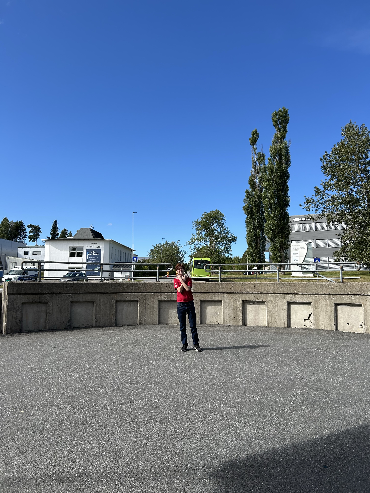
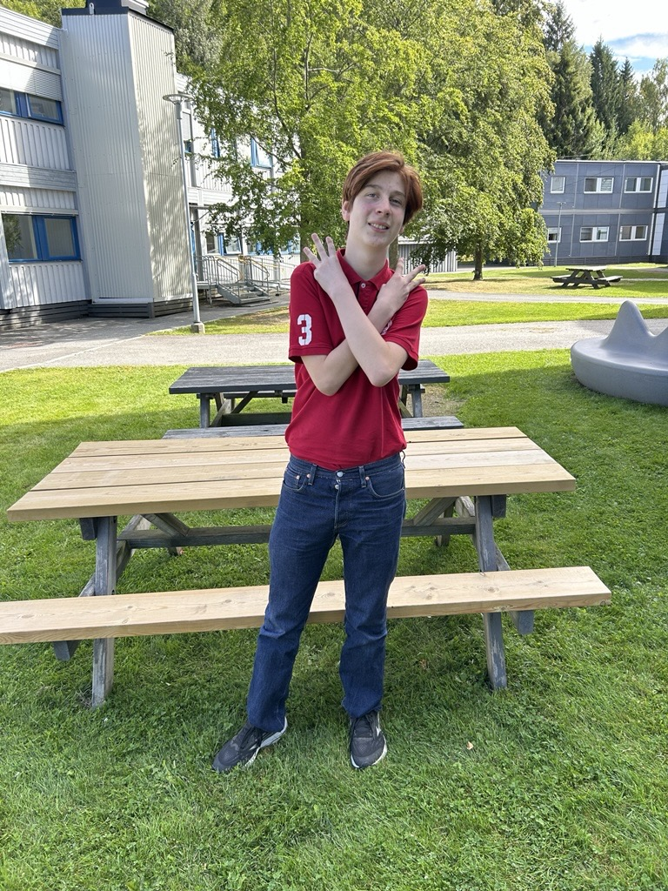
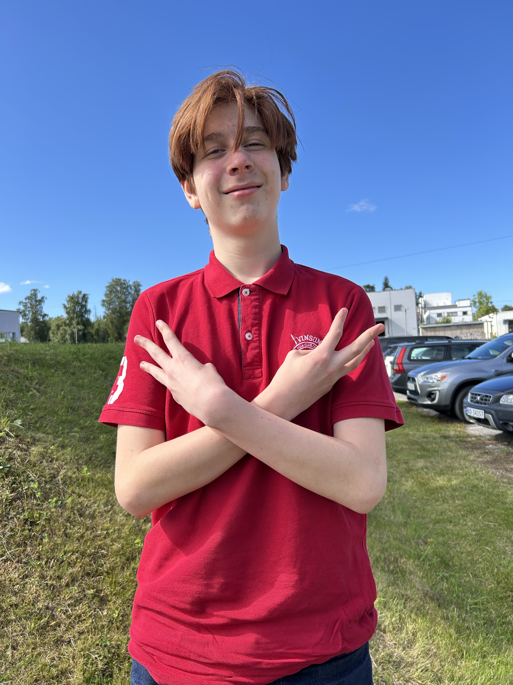
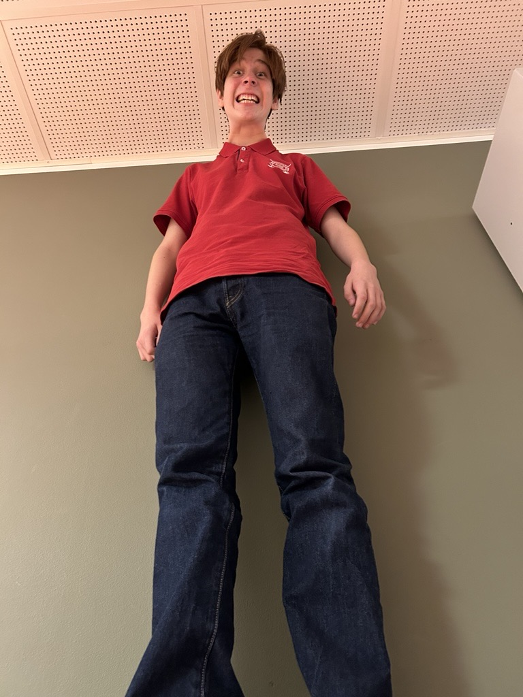
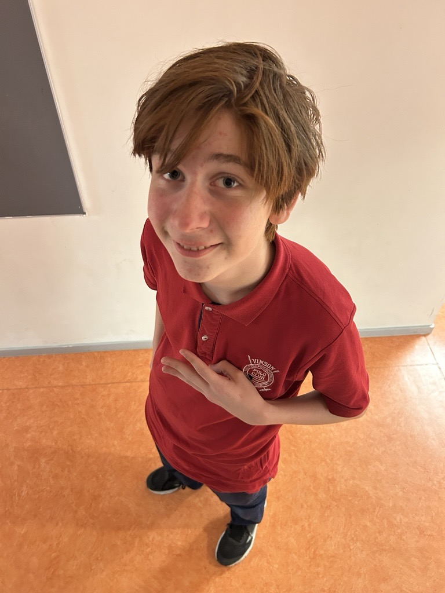
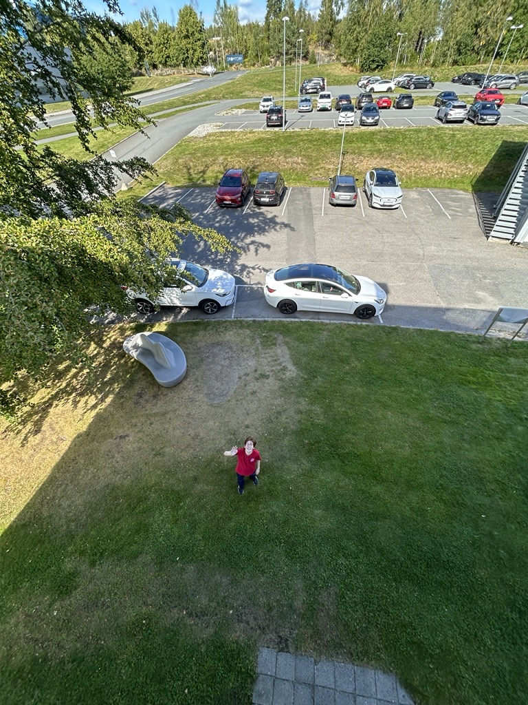

- Ultra total
- Normalperspektiv
- ISO 50
- f1,5
- 1/3356s
Velkommen til fotogalleriet mitt, her kan du se både utsnitt og perspektiver
For å se mer info om bildene, hold musepekeren din over de!





